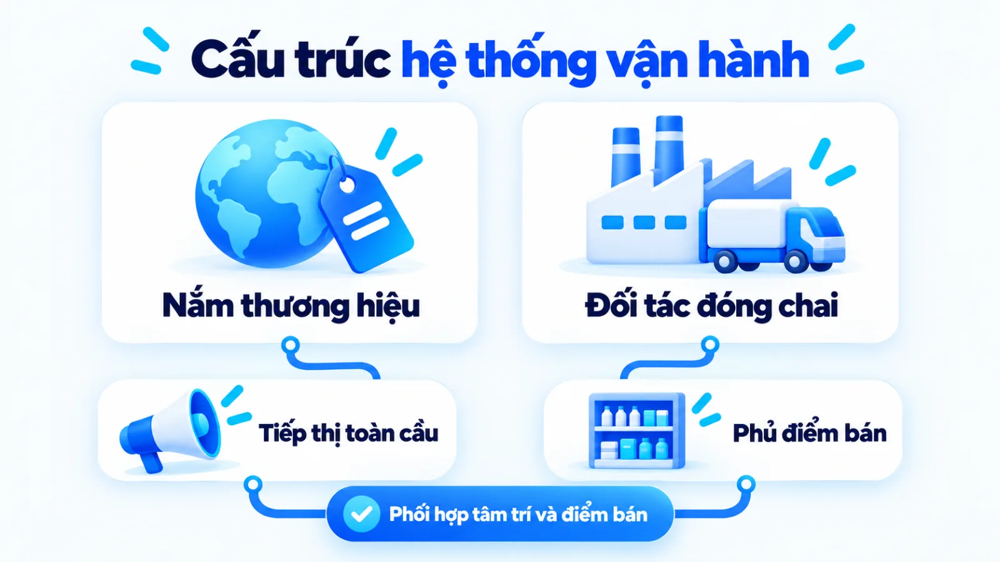
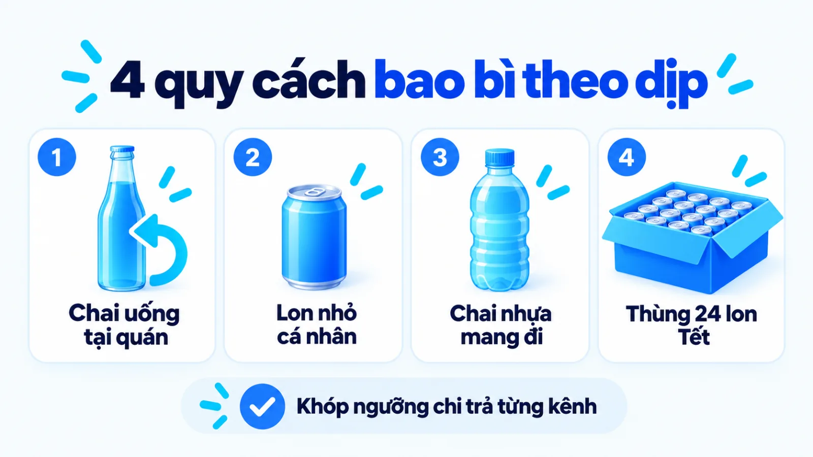
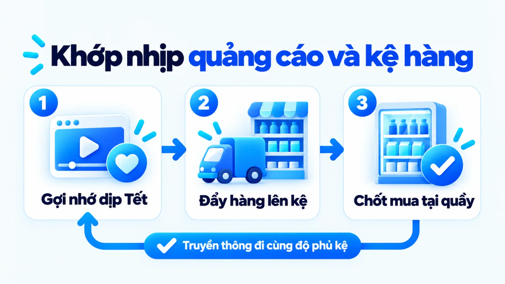
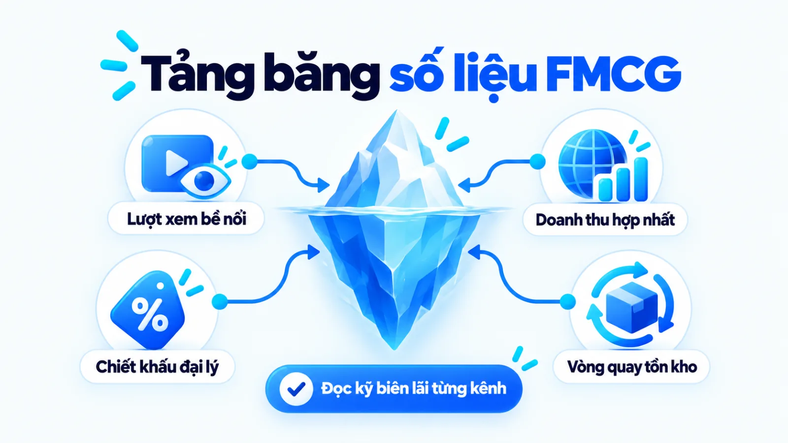
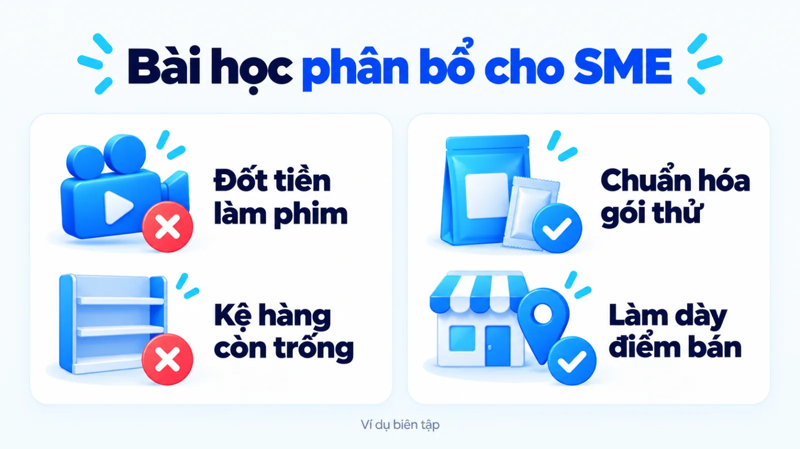
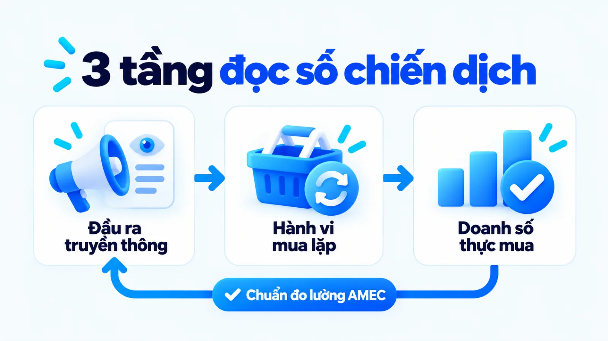

Chiến lược marketing của Coca Cola khác ở đâu?
Chiến lược marketing của Coca Cola là hệ thống kết hợp truyền thông cảm xúc đại chúng với mạng lưới phân phối đa tầng nhằm duy trì đồng thời độ sẵn có trong tâm trí và độ sẵn có tại điểm bán. Khi nhìn vào các chiến dịch mùa Tết thu hút thảo luận lớn, người làm nghề rất dễ quy kết thành công cho quảng cáo bề nổi mà bỏ qua kiến trúc bao bì theo dịp uống và độ phủ tủ mát tại tiệm tạp hóa. Nếu doanh nghiệp nhỏ sao chép cách chi tiền làm phim quảng cáo khi hàng chưa lên kệ, nhu cầu vừa khơi gợi sẽ rơi ngay vào tay đối thủ có sẵn sản phẩm tại quầy. Tôi là Lê Tuấn Việt, Marketing Leader tại TAKI Group. Trong bài viết này, tôi phân tích dữ kiện công khai của hệ thống Coca-Cola, mổ xẻ cơ chế giữ thị phần và rút ra điều kiện áp dụng cho doanh nghiệp vừa và nhỏ.
- Đăng ngày
- Cập nhật

Tóm tắt nhanh
- Chiến lược marketing của Coca Cola vận hành trên hai trụ cột song hành là độ sẵn có trong tâm trí qua truyền thông cảm xúc và độ sẵn có vật lý tại điểm bán lẻ đa tầng.
- Cách chia nhỏ quy cách bao bì từ chai thủy tinh hoàn trả, lon nhỏ đến thùng gia đình giúp hãng khớp đúng ngưỡng chi trả của từng dịp uống mà không cần hạ giá đồng loạt.
- Số liệu doanh thu hợp nhất toàn cầu hoặc lượt thảo luận chiến dịch mùa vụ là chỉ số bề nổi, chưa chứng minh riêng biên lợi nhuận ròng hay tỷ lệ chuyển đổi tại từng kênh Việt Nam.
- Doanh nghiệp vừa và nhỏ không nên học ngân sách quảng cáo đại chúng của tập đoàn lớn, mà nên ưu tiên chuẩn hóa quy cách đóng gói và làm dày trưng bày tại nhóm điểm bán cốt lõi.
Mục lục bài viết8 phần
Chiến lược marketing của Coca Cola và hồ sơ case
Chiến lược marketing của Coca Cola là hệ thống kết hợp độ phủ truyền thông cảm xúc đại chúng với mạng lưới phân phối đa tầng nhằm duy trì đồng thời mental availability (độ sẵn có trong tâm trí) và physical availability (độ sẵn có tại điểm bán) cho toàn bộ danh mục đồ uống tiêu dùng.
Hồ sơ dữ kiện công khai cấp tập đoàn và thị trường Việt Nam (2024, 2025)
Tách bạch quy mô The Coca-Cola Company và hoạt động đóng chai tại địa phương
Theo dữ liệu tự công bố năm 2025 trên trang giới thiệu của The Coca-Cola Company, sản phẩm của tập đoàn hiện diện tại hơn 200 quốc gia và vùng lãnh thổ, phục vụ hơn 2,2 tỷ khẩu phần mỗi ngày. Báo cáo tài chính năm 2025 ghi nhận doanh thu thuần hợp nhất toàn tập đoàn đạt 47,9 tỷ USD, tăng 2% so với năm trước. Tại Việt Nam, đối tác đóng chai Swire Coca-Cola công bố giai đoạn 2023 đến 2024 vận hành 3 nhà máy, 18 dây chuyền và 6 trung tâm phân phối phục vụ vùng dân số nhượng quyền khoảng 97 triệu người.
- 47,9 tỷ USD
- Doanh thu thuần toàn tập đoàn năm 2025, tăng 2%
- 2,2 tỷ
- Khẩu phần phục vụ mỗi ngày trên hơn 200 thị trường
- 18 dây chuyền
- Quy mô dây chuyền đóng chai tại 3 nhà máy Việt Nam
Bối cảnh ngành nước giải khát và phạm vi dữ kiện
Khi phân tích case trong ngành FMCG (hàng tiêu dùng nhanh), bước đầu tiên là tách rõ hai pháp nhân vận hành gồm tập đoàn mẹ nắm giữ thương hiệu, công thức cốt lõi và định hướng tiếp thị toàn cầu với đơn vị đối tác đóng chai trực tiếp quản lý nhà máy, đội xe giao nhận và chiết khấu điểm bán địa phương. Nếu gộp chung số liệu tài chính hợp nhất toàn cầu vào một chiến dịch truyền thông đơn lẻ tại Việt Nam, người đọc sẽ hiểu lệch mối quan hệ giữa chi phí quảng cáo và doanh thu thực.
Trong hồ sơ danh mục thương hiệu cập nhật năm 2025, tập đoàn công bố sở hữu khoảng 30 nhãn hiệu đạt quy mô doanh thu tỷ đô la Mỹ, trải rộng từ nước ngọt có gas đến nước lọc, trà, cà phê, nước trái cây và đồ uống thể thao. Do các báo cáo kiểm toán không tách riêng tỷ lệ thị phần phần trăm hay lợi nhuận ròng của riêng nhãn hàng Coca-Cola tại Việt Nam, bài viết này chỉ sử dụng các dữ kiện đã xác minh và phân tích cơ chế vận hành theo đúng phạm vi nguồn.

Nghịch lý giữa quảng cáo cảm xúc và mạng lưới bán
Nhiều chủ SME (doanh nghiệp vừa và nhỏ) thường nhìn vào các phim quảng cáo mùa Tết hay chiến dịch in tên lên vỏ lon rồi kết luận rằng sức mạnh của Coca-Cola nằm ở nghệ thuật kể chuyện cảm xúc. Trên thực tế, nước giải khát là mặt hàng mua theo xung động ngắn hạn với mức giá mỗi đơn vị thấp và sản phẩm thay thế nằm sát nhau trong cùng một tủ mát. Nếu khách hàng nhớ tới thương hiệu nhưng bước vào quán phở hay tiệm tạp hóa đầu ngõ mà không thấy chai nước được ướp lạnh sẵn, cảm xúc truyền thông sẽ không chuyển thành giao dịch.
Cơ chế giữ thị phần thực chất vận hành trên sự khớp nhịp giữa việc xuất hiện đúng lúc khách hàng nghĩ đến đồ uống giải khát và việc hiện diện vật lý ngay trong tầm với của họ tại điểm mua. Đây là điểm khác biệt căn bản về cấu trúc kênh so với chiến lược marketing của Apple, nơi thương hiệu công nghệ định vị cao cấp có thể kiểm soát chặt trải nghiệm qua hệ thống cửa hàng trực tiếp và số ít đại lý ủy quyền.
Định vị thương hiệu và cuộc đối đầu hệ tiêu chí
Trong ngành nước giải khát có gas, Coca-Cola neo giữ hệ tiêu chí gắn kết gia đình và nghi thức bàn ăn truyền thống, trong khi đối thủ trực tiếp PepsiCo xoay trục sang trải nghiệm sảng khoái của giới trẻ, âm nhạc và lựa chọn không đường. Hai thương hiệu không tranh cãi ai làm ra lon nước ngọt tốt hơn theo cùng một thước đo, mà chủ động kéo người mua về hai hệ quy chiếu bối cảnh hoàn toàn khác nhau.
Cách tách phân khúc theo dịp uống và lượng đường
Thay vì chỉ chia khách hàng theo độ tuổi hay thu nhập nhân khẩu học truyền thống, STP (phân khúc, chọn thị trường mục tiêu và định vị) trong ngành đồ uống đóng chai được thiết kế xoay quanh dịp tiêu dùng và rào cản sức khỏe. Cùng một nhân viên văn phòng có thể chọn lon nước không đường vào buổi trưa để tránh nạp thêm năng lượng, nhưng lại mua thùng phiên bản truyền thống khi tổ chức tiệc sum họp gia đình vào dịp cuối tuần.
Theo thông tin từ Coca-Cola Việt Nam năm 2025, nhãn hàng triển khai song song phiên bản Vị Nguyên Bản và phiên bản Không Đường bên cạnh các dòng trà đóng chai, nước trái cây và đồ uống vận động. Ở chiều ngược lại, hồ sơ chiến lược năm 2024 đến 2025 của PepsiCo xác định dòng sản phẩm Pepsi Zero Sugar là trụ cột tăng trưởng chiến lược song hành cùng chương trình chuyển đổi danh mục giảm đường trên phạm vi toàn cầu.
Coca Cola và Pepsi kéo người mua về tiêu chí nào
Khi người dẫn đầu thị phần đã chiếm giữ hình ảnh sum vầy gia đình và ký ức truyền thống qua nhiều thập kỷ, người thách thức nếu lặp lại thông điệp tương tự sẽ chỉ củng cố thêm vị thế cho đối thủ. Vì vậy, mỗi bên chọn một không gian văn hóa và nhóm điểm chạm ẩm thực riêng để biến thế mạnh của mình thành tiêu chí ưu tiên khi người tiêu dùng gọi đồ uống. Bảng dưới đây đối chiếu hai hệ tiêu chí cạnh tranh theo năm trục quyết định.
| Tiêu chí đối chiếu | Hệ tiêu chí của Coca-Cola | Hệ tiêu chí của PepsiCo |
|---|---|---|
| Giá trị cảm xúc lõi | Sự gắn kết gia đình, sẻ chia khoảnh khắc ấm áp và di sản truyền thống | Tinh thần trẻ trung, năng động, dám thể hiện cá tính và đổi mới |
| Dịp uống trọng tâm | Bữa cơm sum họp gia đình, liên hoan tập thể và dịp lễ Tết cổ truyền | Tụ tập bạn bè, sự kiện giải trí ngoài trời và thưởng thức món ăn đường phố |
| Mũi nhọn không đường | Mở rộng Coca-Cola Không Đường giữ trọn trải nghiệm quen thuộc | Đặt Pepsi Zero Sugar làm trụ cột tăng trưởng gắn với khung pep+ |
| Tài sản truyền thông | Biểu tượng chim én mùa Tết, bàn ăn lớn và hoạt động cộng đồng | Âm nhạc đại chúng, đại sứ thần tượng giới trẻ và lễ hội văn hóa |
| Tác động tại điểm bán | Ưu tiên gói gia đình tại siêu thị và hiện diện tại quán ăn truyền thống | Tập trung chuỗi thức ăn nhanh, rạp phim và quán ăn vặt giới trẻ |
Giới hạn cần lưu ý khi đọc bảng đối chiếu trên là sự phân cực rõ rệt về thông điệp truyền thông không đồng nghĩa với việc tệp người mua ngoài đời thực tách biệt tuyệt đối. Trong hành vi mua hàng tiêu dùng nhanh tại Việt Nam, phần lớn người uống vẫn sẵn sàng chuyển đổi qua lại giữa hai nhãn hiệu tùy thuộc vào việc quán ăn hoặc tiệm tạp hóa tại thời điểm đó đang có sẵn sản phẩm nào trong tủ lạnh.
Đối với doanh nghiệp vừa và nhỏ, bài học từ cuộc đối đầu này nằm ở cách chọn hệ quy chiếu trước khi đổ tiền làm nội dung tiếp thị. Khi đối thủ lớn đã khóa chặt tiêu chí phổ biến nhất của ngành, một hệ thống marketing tổng thể hiệu quả phải bắt đầu từ việc chọn một bối cảnh sử dụng ngách mà sản phẩm của bạn giải quyết trọn vẹn hơn hẳn.
Chiến lược kinh doanh của Coca Cola qua 3 đòn bẩy
Chiến lược kinh doanh của Coca Cola vận hành qua ba đòn bẩy liên hoàn trong mô hình Marketing Mix 4P (tiếp thị hỗn hợp bốn trụ cột): chia nhỏ quy cách bao bì theo dịp uống, định giá theo gói kèm độ phủ kênh phân phối dày đặc và kích hoạt khuyến mãi điểm bán theo mùa vụ. Ba cơ chế dưới đây giải thích cách hãng chuyển hóa nhận diện thương hiệu thành dòng tiền tại quầy thu ngân.
- Kiến trúc bao bì theo dịp uống: Chia nhỏ dung tích từ chai thủy tinh hoàn trả, lon nhỏ đến thùng quà tặng để khớp đúng bối cảnh tiêu dùng.
- Định giá theo gói và phủ dày kênh: Phối hợp mức giá theo từng quy cách đóng gói với mạng lưới tiệm tạp hóa, siêu thị và quán ăn.
- Kích hoạt điểm bán và mùa vụ: Gắn thông điệp chiến dịch Tết với kệ trưng bày bắt mắt, tủ mát ướp lạnh sẵn và chiết khấu sản lượng cho chủ tiệm.
Cơ chế 1: Danh mục sản phẩm và bao bì theo dịp mua
Trong ngành đồ uống, sản phẩm không chỉ là chất lỏng bên trong mà còn là quy cách bao bì quyết định người mua sẽ dùng nó ở đâu và với ai. Báo cáo vận hành giai đoạn 2024 đến 2025 của The Coca-Cola Company cho biết định dạng chai thủy tinh hoàn trả đang được triển khai tại hơn 110 quốc gia nhằm giảm chi phí bao bì và duy trì mức giá tiếp cận thấp cho các bữa ăn tại quán bình dân.
Hãy hình dung điểm chạm thực tế tại một quán bún chả buổi trưa ở Hà Nội: khách gọi một chai thủy tinh ướp lạnh uống ngay tại bàn với chi phí chỉ bằng một phần nhỏ bữa ăn, còn vỏ chai được quán thu hồi trả lại cho nhà phân phối. Ngược lại, khi cũng người khách đó vào siêu thị cuối tuần, họ lại chọn lốc nhiều lon nhỏ cho gia đình hoặc thùng lớn để biếu tặng dịp lễ mà không cảm thấy các mức giá này mâu thuẫn với nhau.
Có thể ví kiến trúc bao bì này như cách các hãng hàng không phân tách hạng vé từ tiết kiệm chỉ có hành lý xách tay đến hạng linh hoạt kèm suất ăn trên cùng một chuyến bay. Phép tương tự này chỉ dùng để làm rõ cơ chế phân tách mức sẵn lòng chi trả theo bối cảnh sử dụng, không thay thế cho dữ liệu khảo sát động cơ mua hàng thực tế của từng ngành.

Cơ chế 2: Định giá theo gói và kênh phân phối dày
Cơ chế bao bì đa quy cách chỉ phát huy tác dụng khi đi kèm chính sách định giá theo gói (price-pack architecture) và hệ thống phân phối tách rõ vai trò từng kênh. Ở kênh GT (kênh thương mại truyền thống gồm chợ và tiệm tạp hóa) cùng kênh HoReCa (khách sạn, nhà hàng, quán ăn), ưu tiên hàng đầu là mức giá đơn vị thấp và sản phẩm được làm lạnh sẵn. Ở kênh MT (kênh thương mại hiện đại gồm siêu thị và cửa hàng tiện lợi), trọng tâm lại chuyển sang giá trị giỏ hàng qua các gói lốc nhiều lon hoặc mua kèm món ăn.
Để vận hành mạng lưới này tại Việt Nam, hệ thống của Swire Coca-Cola dựa trên 3 nhà máy, 18 dây chuyền đóng chai và 6 trung tâm phân phối phủ vùng dân số nhượng quyền khoảng 97 triệu người theo số liệu công bố giai đoạn 2023 đến 2024. Tương tự cách doanh nghiệp số phải tối ưu từng bước trong marketing bán hàng online để giảm tỷ lệ bỏ giỏ hàng, hãng nước giải khát phải đảm bảo chiếc tủ mát đặt ở vị trí dễ thấy nhất ngay cửa quán ăn để khách gọi theo phản xạ.
Tuy nhiên, độ phủ phân phối dày đặc luôn đi kèm chi phí vận hành kho vận, hao hụt thiết bị làm lạnh và chiết khấu thương mại lớn cho các cấp đại lý. Dữ liệu công khai hiện chỉ xác nhận quy mô hạ tầng nhà máy và trung tâm phân phối, chưa công bố biên lợi nhuận ròng trên từng kênh hay tỷ lệ điểm bán duy trì doanh số ổn định sau giai đoạn đầu mở mới.
Cơ chế 3: Khuyến mãi điểm bán và chiến dịch mùa vụ
Mảnh ghép thứ ba nối sản phẩm và kênh phân phối lại với nhau là cách đồng bộ chiến dịch truyền thông mùa vụ với hoạt động trade marketing (tiếp thị thương mại tại điểm bán). Tại Việt Nam, các chiến dịch Tết thường niên của hãng giai đoạn 2024 đến 2026 liên tục xoay quanh thông điệp gắn kết gia đình, bàn ăn sum họp và hoạt động cộng đồng như Chợ Tết 0 đồng để biến thùng nước ngọt thành món quà biếu quen thuộc dịp xuân.
Điểm đáng chú ý là quảng cáo cảm xúc trên truyền hình và mạng xã hội không chạy độc lập, mà đóng vai trò tín hiệu để đội ngũ kinh doanh thuyết phục đại lý nhập hàng sớm trước mùa cao điểm. Khi chủ tiệm tạp hóa thấy thương hiệu phủ sóng dày đặc và nhận được chương trình chiết khấu theo bậc sản lượng cùng kệ trưng bày đỏ rực trước cửa tiệm, họ sẵn sàng dành diện tích mặt tiền đẹp nhất cho thùng hàng Tết.

Với những chiến dịch cá nhân hóa bao bì hoặc tương tác số, việc kết hợp trải nghiệm tại quầy với dữ liệu người dùng có nét tương đồng về mục tiêu giữ tương tác với xu hướng cá nhân hóa bằng AI trên môi trường số hiện nay. Dù vậy, giới hạn cần nhớ là sự hào hứng sưu tầm vỏ lon in tên hay xem pháo hoa kỹ thuật số chủ yếu tạo ra đỉnh thảo luận ngắn hạn, còn doanh số bền vững cả năm vẫn phụ thuộc vào thói quen tiêu dùng lặp lại hàng ngày.
Tín hiệu bề nổi và giới hạn dữ liệu công khai
Lượt thảo luận mạng xã hội hay độ phủ của các chiến dịch quảng cáo cảm xúc chỉ phản ánh chỉ số đầu ra truyền thông, không tự động chứng minh hiệu quả doanh thu ròng hay biên lợi nhuận theo kênh phân phối. Để đọc đúng case Coca-Cola mà không rơi vào bẫy ngợi ca bề nổi, người làm nghề phải tách bạch phần dữ kiện nguồn đã xác nhận với phần suy luận vận hành.
Đối chiếu độ phủ chiến dịch với doanh số thực tế
Theo bộ nguyên tắc Barcelona Principles 4.0 của AMEC (Hiệp hội Quốc tế về Đo lường và Đánh giá Truyền thông) công bố tháng 6/2025, hệ thống đo lường chuyên nghiệp bắt buộc phải phân biệt rõ chỉ số đầu ra truyền thông (outputs) với kết quả thay đổi hành vi (outcomes) và tác động kinh doanh thực tế (impact). Một chiến dịch đạt hàng triệu lượt xem video hoàn toàn có thể đi cùng mức tồn kho đại lý cao nếu hàng hóa không thoát ra được tới tay người tiêu dùng cuối.
Bảng dưới đây đối chiếu bốn nhóm dữ kiện đã được nguồn chính thức xác nhận với cách diễn giải cơ chế trong bài và những giới hạn hoặc khả năng giải thích khác mà dữ liệu công khai chưa chứng minh.
| Dữ kiện nguồn xác nhận | Diễn giải cơ chế trong bài | Giới hạn và khả năng khác |
|---|---|---|
| Doanh thu 47,9 tỷ USD | Danh mục khoảng 30 nhãn tỷ đô và độ phủ hơn 200 quốc gia giữ quy mô | Số hợp nhất toàn tập đoàn 2025, không tách riêng lãi ròng tại Việt Nam |
| 3 nhà máy, 18 dây chuyền | Hạ tầng của Swire Coca-Cola giúp tối ưu cự ly cung ứng cho 97 triệu dân | Chưa công bố chi phí khấu hao, chiết khấu kênh và tỷ lệ điểm bán có lãi |
| Chai hoàn trả ở 110 nước | Bao bì thu hồi giúp hạ giá bán lẻ mỗi lần uống tại quán ăn bình dân | Đòi hỏi hệ thống thu gom vỏ chai phức tạp, khó áp dụng nếu vòng quay chậm |
| Chiến dịch Tết thường niên | Nối thông điệp sum họp gia đình với nhu cầu mua thùng làm quà biếu Tết | Doanh số mùa Tết còn do chính sách đẩy tồn kho đại lý và thói quen sẵn có |
Khi nhìn vào bảng trên, có thể thấy sức tiêu thụ tăng vọt trong các dịp lễ Tết tại Việt Nam luôn là kết quả tổng hòa của văn hóa biếu tặng cổ truyền, chính sách chiết khấu đẩy hàng tồn kho xuống đại lý (stock-loading) và độ phủ sẵn có của hàng trăm nghìn điểm bán lẻ. Việc quy kết toàn bộ kết quả bán hàng mùa vụ cho một thông điệp quảng cáo cảm xúc là suy diễn vượt quá phạm vi bằng chứng.

Những chỉ số vận hành chưa được công bố chính thức
Tại sao một chiến dịch truyền thông được khen ngợi khắp mạng xã hội vẫn chưa đủ căn cứ để doanh nghiệp khác sao chép? Câu trả lời nằm ở những con số vận hành chìm dưới tảng băng mà các thông cáo báo chí không bao giờ tiết lộ, từ tỷ lệ chiết khấu thương mại cho đại lý cấp một đến chi phí bảo trì tủ mát trên mỗi điểm bán lẻ.
Trong hồ sơ công khai hiện tại, ba nhóm dữ liệu quan trọng tại thị trường Việt Nam vẫn chưa được xác nhận bằng báo cáo kiểm toán độc lập gồm: tỷ lệ phần trăm thị phần chính xác giữa Coca-Cola và Pepsi theo từng kênh bán trong năm 2025 đến 2026; chi phí quảng cáo cụ thể kèm tỷ lệ chuyển đổi trực tiếp của từng chiến dịch Tết; và tỷ lệ hàng tồn kho đọng lại ở đại lý sau khi kết thúc đợt khuyến mãi mùa vụ.
Khi lập chiến lược digital marketing cho doanh nghiệp của mình, người phụ trách marketing cần giữ kỷ luật tương tự: không lấy chỉ số bề nổi của đối thủ ngoài thị trường làm căn cứ cắt giảm ngân sách chăm sóc điểm bán nội bộ. Thiếu dữ liệu biên lợi nhuận theo kênh thì mọi sự bắt chước bề nổi đều mang rủi ro tài chính.
Bài học có điều kiện cho doanh nghiệp vừa và nhỏ
Doanh nghiệp vừa và nhỏ không nên sao chép ngân sách quảng cáo đại chúng của Coca-Cola, mà nên học cách thiết kế quy cách đóng gói theo dịp mua và tập trung trưng bày tại nhóm điểm bán có tỷ lệ chuyển đổi cao nhất. Bảng chuyển giao dưới đây giúp bạn lọc ra những cơ chế vừa sức cùng điều kiện áp dụng và ngoại lệ đảo chiều.
Điều kiện áp dụng cơ chế trưng bày và combo giá
Trước khi áp dụng bất kỳ bài học nào từ một tập đoàn đa quốc gia sang mô hình doanh nghiệp vừa và nhỏ tại Việt Nam, người làm nghề cần đối chiếu điều kiện nguồn lực, đặc thù sản phẩm và những trường hợp cơ chế sẽ phản tác dụng theo ba trục trong bảng sau.
| Bài học cơ chế | Điều kiện phù hợp và ngoại lệ | Việc thử nhỏ và tín hiệu đo |
|---|---|---|
| Chia quy cách theo dịp mua | Hợp hàng tiêu dùng mua lặp lại; đảo chiều nếu sản phẩm kỹ thuật cần cấu hình riêng | Thử gói dùng thử giá nhỏ và hộp quà gia đình, đo tỷ lệ mua lặp lại hàng tháng |
| Làm dày điểm bán cụm hẹp | Hợp khi biên lợi nhuận gộp đủ trả chiết khấu; đảo chiều nếu vòng quay hàng quá chậm | Chọn một cụm điểm bán cốt lõi trong quận trọng điểm, đo tốc độ thoát hàng mỗi tuần |
| Khớp quảng cáo với kệ hàng | Chỉ chạy chiến dịch mùa vụ khi hàng đã lên kệ; đảo chiều nếu chuỗi cung ứng đứt gãy | Kiểm tra tỷ lệ điểm bán có sẵn hàng trưng bày trước khi bật ngân sách quảng cáo |
| Chọn hệ tiêu chí ngách | Hợp khi đối thủ lớn đã chiếm tiêu chí chung; đảo chiều nếu ngách quá hẹp không đủ cầu | Khảo sát nhóm khách mua thực tế về lý do chọn sản phẩm trong một dịp dùng cụ thể |
Khi đọc bảng chuyển giao trên, điều kiện tiên quyết là doanh nghiệp phải tính hết chi phí chiết khấu kênh, chi phí vận chuyển và tỷ lệ đổi trả hàng cận hạn vào giá vốn trước khi mở rộng điểm bán. Với các sản phẩm dịch vụ chuyên môn B2B (giao dịch giữa doanh nghiệp với doanh nghiệp) hoặc mặt hàng giá trị cao cần tư vấn sâu, việc cố phủ dày điểm bán đại trà sẽ làm loãng nguồn lực chăm sóc và gây lỗ vốn.

Khi nào SME không nên sao chép quảng cáo đại chúng
Sai lầm phổ biến nhất khi học case thương hiệu lớn là tách rời phần ngọn truyền thông khỏi phần gốc phân phối. Thay vì dồn tiền làm một phim quảng cáo Tết giàu cảm xúc khi sản phẩm mới chỉ nằm rải rác ở vài cửa hàng, doanh nghiệp nhỏ nên khóa chặt độ phủ trưng bày tại một cụm điểm bán mục tiêu rồi mới dùng truyền thông khuếch đại nhận biết.
Ví dụ biên tập, không phải kết quả khách hàng thật
Đối chiếu hai cách phân bổ ngân sách Tết của hãng trà nhỏ
Giả định một doanh nghiệp nhỏ sản xuất trà thảo mộc đóng chai tại Thành phố Hồ Chí Minh có ngân sách mùa Tết giới hạn. Ở cách làm sai, đội ngũ dồn ngân sách quay video cảm xúc phát diện rộng trên mạng xã hội, nhưng khi người xem ra tạp hóa gần nhà hỏi mua thì kệ trống nên chuyển sang mua nước ngọt có sẵn.
Ở cách làm đúng trong ví dụ biên tập này, doanh nghiệp thiết kế hộp quà gọn nhẹ, tập trung phủ kệ trưng bày ngang tầm mắt tại cụm cửa hàng thực phẩm sạch và quán ăn văn phòng ở khu trung tâm, đồng thời chỉ chạy quảng cáo bán kính hẹp quanh điểm bán để kiểm soát vòng quay vốn.
Trong thực tế vận hành, bài toán kết nối giữa hoạt động thu hút khách và năng lực đón khách tại cửa hàng là yếu tố quyết định hiệu quả doanh thu. Chẳng hạn, trong dự án cố vấn Marketing cho Uyên Uyên Mart (tháng 5/2025 đến tháng 5/2026) do Lê Tuấn Việt phụ trách, việc đồng bộ kế hoạch thu hút với trải nghiệm tại điểm bán đã góp phần tăng 45% lượt khách đến cửa hàng và nâng doanh thu toàn hệ thống từ 3 lên 6 tỷ đồng mỗi tháng (tăng 100% so với cùng kỳ). Kết quả này minh họa cho trường hợp cụ thể khi điểm bán đã chuẩn hóa vận hành, không phải cam kết áp dụng giống hệt cho mọi ngành hàng.
Tôi ưu tiên kiểm tra tỷ lệ hiện diện của sản phẩm tại các điểm chạm chuyển đổi cốt lõi trước khi phê duyệt ngân sách truyền thông diện rộng, vì quảng cáo tốt đến đâu cũng không cứu được một kệ hàng trống. Việc đưa thứ tự ưu tiên này vào kế hoạch marketing ngay từ đầu quý giúp đội ngũ giữ được kỷ luật dòng tiền. Độ phủ tâm trí phải đi cùng độ phủ kệ hàng.
Chiến dịch marketing của Coca Cola: cách đọc số
Khi đọc các báo cáo hoặc bài phân tích về chiến dịch marketing của Coca Cola, người làm nghề cần tách riêng ba lớp chỉ số gồm tín hiệu tương tác truyền thông, hành vi mua đạt chuẩn tại kênh phân phối và kết quả tài chính ròng. Ba lớp thước đo dưới đây giúp bạn tránh lấy chỉ số bề nổi làm căn cứ ra quyết định.
- Lớp đầu ra truyền thông: Ghi nhận lượt xem video, lượng thảo luận tự nhiên và mức độ nhận biết thông điệp sau chiến dịch mùa vụ. Chỉ số này cho biết thông điệp có thu hút sự chú ý hay không, nhưng chưa phản ánh hành vi rút ví tại quầy.
- Lớp vận hành điểm bán: Đo tỷ lệ cửa hàng có trưng bày sản phẩm đạt chuẩn, độ phủ tủ mát hoạt động thực tế và tỷ lệ người mua lặp lại sau lần mua đầu tiên vì tò mò bao bì mới.
- Lớp kết quả kinh doanh ròng: Tách bạch sản lượng bán buôn đẩy xuống đại lý (sell-in) với lượng hàng thực sự bán tới tay người tiêu dùng cuối (sell-out) cùng biên lợi nhuận ròng sau khi trừ chiết khấu thương mại và khuyến mãi kênh.
Khi áp dụng khung ba lớp này vào hoạt động content marketing hoặc chiến dịch thương hiệu của doanh nghiệp vừa và nhỏ, bạn sẽ nhận ra ngay điểm đứt gãy nằm ở đâu. Nếu lớp đầu ra truyền thông tăng cao nhờ nội dung lan truyền nhưng lớp vận hành điểm bán và lớp kết quả kinh doanh ròng đứng yên, nguyên nhân thường nằm ở việc khách hàng không tìm thấy điểm mua thuận tiện hoặc quy cách đóng gói đang vượt quá ngưỡng chi trả thử nghiệm lần đầu.

Nguyên tắc kiểm tra phạm vi số liệu trước khi lập kế hoạch
Trước khi trích dẫn bất kỳ con số tăng trưởng nào từ các bài viết tổng hợp case study trên mạng, hãy tự hỏi ba câu: số liệu đó thuộc phạm vi tập đoàn toàn cầu hay thị trường Việt Nam, được đo trong vài tuần cao điểm mùa vụ hay suốt năm tài chính, và là lượng hàng xuất kho đại lý hay lượng hàng người dùng cuối thực mua. Nếu nguồn không nêu rõ ba thông số này, chỉ nên xem đó là tín hiệu tham khảo về ý tưởng truyền thông chứ không dùng làm định mức ngân sách.
Câu hỏi thường gặp về chiến lược marketing của Coca Cola
Vì sao Coca Cola vẫn chi lớn cho quảng cáo dù đã quen mặt?
Việc duy trì ngân sách quảng cáo lớn giúp Coca-Cola giữ vững độ sẵn có trong tâm trí ngay tại khoảnh khắc người mua phát sinh cơn khát hoặc chuẩn bị bữa ăn. Trong ngành nước giải khát có tần suất mua lặp lại cao và nhiều lựa chọn thay thế trên cùng kệ hàng, việc ngắt quãng nhắc nhớ sẽ tạo khoảng trống để đối thủ chiếm vị trí ưu tiên khi khách ra quyết định mua.
Chiến lược khuyến mãi của Coca Cola ưu tiên kênh bán nào?
Hệ thống chia khuyến mãi thành hai luồng tách biệt gồm ưu đãi cho người tiêu dùng cuối ở siêu thị và khuyến mãi thương mại cho kênh tạp hóa truyền thống cùng quán ăn. Kênh tạp hóa và quán ăn thường nhận hỗ trợ tủ mát, vật phẩm trưng bày và chiết khấu theo sản lượng vì đây là điểm chạm quyết định sản phẩm có được ướp lạnh sẵn để bán ngay hay không.
Bao bì lon nhỏ của Coca Cola giải quyết rào cản mua gì?
Quy cách dung tích nhỏ giúp hạ mức giá tuyệt đối trên mỗi lần chi trả và giải tỏa tâm lý e ngại nạp quá nhiều đường hoặc năng lượng trong một lần uống. Nhờ thiết kế bao bì theo đúng ngưỡng tiêu thụ này, thương hiệu giữ chân được nhóm khách hàng quan tâm sức khỏe mà vẫn bảo toàn doanh thu trên mỗi lít sản phẩm tốt hơn so với việc giảm giá chai lớn.
Khi nào doanh nghiệp nhỏ không nên học theo Coca Cola?
Không nên sao chép cách làm phim quảng cáo đại chúng cảm xúc hoặc tài trợ sự kiện lớn khi sản phẩm chưa có độ phủ điểm bán ổn định và ngân sách không đủ duy trì tần suất nhắc nhớ. Với mặt hàng cần tư vấn kỹ thuật sâu, dịch vụ doanh nghiệp hoặc sản phẩm có biên lợi nhuận mỏng, việc dàn trải hàng ra hàng nghìn tiệm lẻ sẽ làm đọng vốn lưu động và tăng hàng cận hạn.
Cách đo hiệu quả chiến dịch mùa Tết tách biệt độ phủ sao?
Người phụ trách marketing phải tách riêng chỉ số đầu ra truyền thông như lượt xem video với chỉ số vận hành kênh như tỷ lệ điểm bán trưng bày đạt chuẩn và lượng hàng bán ra thực tế cho người dùng cuối. Nếu chỉ đếm sản lượng xuất kho cho đại lý trước kỳ nghỉ mà bỏ qua tốc độ tiêu thụ sau Tết, báo cáo sẽ nhầm hiệu ứng đẩy hàng chiết khấu với nhu cầu thực tế.
Doanh nghiệp ngân sách hẹp nên học gì từ kênh tạp hóa?
Thay vì phủ rộng dàn trải toàn quốc, doanh nghiệp vừa và nhỏ nên chọn một cụm địa lý hoặc một nhóm điểm bán hẹp như chuỗi quán ăn văn phòng để làm dày sự hiện diện. Tại các điểm bán trọng điểm đó, hãy tập trung nguồn lực vào vị trí trưng bày ngang tầm mắt và quy cách gói sản phẩm khớp đúng số tiền khách sẵn sàng rút ví ngay tại quầy.
Kết luận
Sức mạnh giữ thị phần của hệ thống Coca-Cola không nằm riêng ở những thước phim quảng cáo giàu cảm xúc, mà ở khả năng biến nhu cầu vừa được khơi gợi thành giao dịch thật nhờ quy cách bao bì theo dịp uống và độ phủ điểm bán đa tầng. Nguyên tắc phân biệt quan trọng nhất mà người làm marketing cần giữ là tách bạch độ sẵn có trong tâm trí với độ sẵn có trên kệ hàng, đồng thời không đánh đồng chỉ số thảo luận truyền thông với doanh số bán ra thực tế sau chiết khấu.
Ngay trong tuần này, bạn có thể tự rà soát lại danh mục sản phẩm và kênh bán hiện có bằng cách kiểm tra nhóm điểm bán hoặc điểm chạm tư vấn trọng điểm xem sản phẩm chủ lực đã có gói quy cách vừa tầm chi trả dùng thử và được đặt ở vị trí khách dễ thấy nhất hay chưa. Khi bài toán của doanh nghiệp không còn dừng ở việc chỉnh sửa từng mẫu quảng cáo lẻ, mà cần kết nối đồng bộ từ cấu trúc danh mục, chính sách giá theo kênh đến hệ thống đo lường chuyển đổi thực tế qua các bài phân tích trong chuyên mục Dự án và bài học, bạn sẽ cần một khung hoạch định tổng thể. Doanh nghiệp của bạn đang thiếu độ phủ truyền thông bên ngoài hay đang mất khách ngay tại điểm chạm bán hàng?